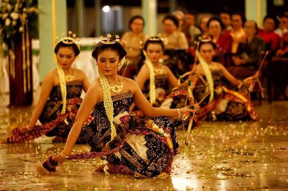
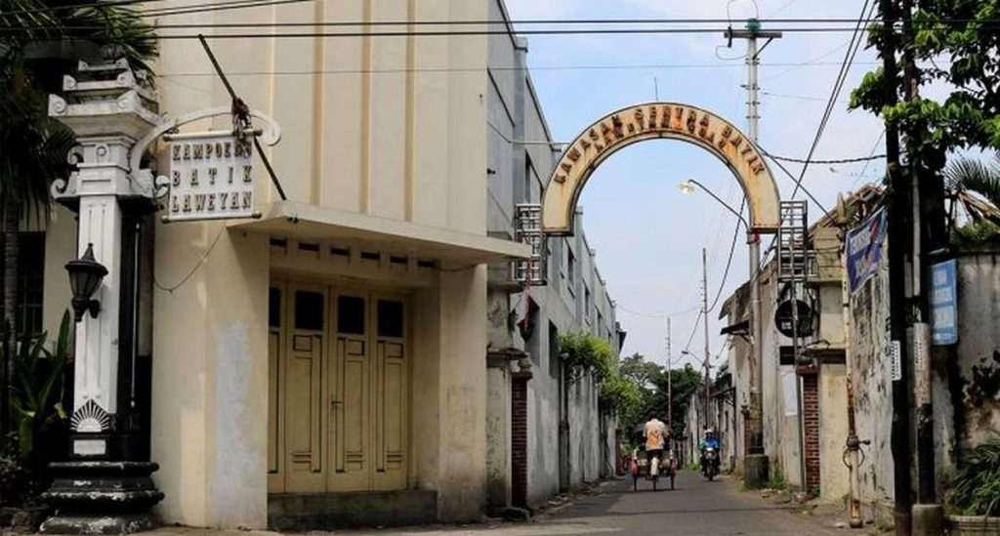
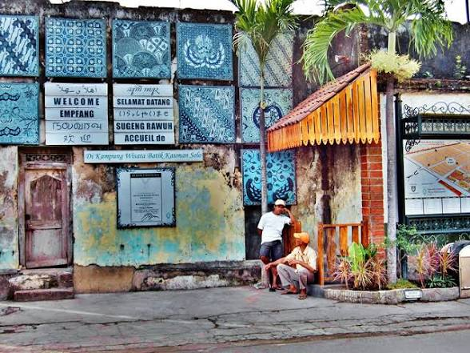

Sejarah dan Keragaman Budaya Surakarta
Kota Solo memiliki banyak destinasi wisata bersejarah yang mencerminkan kekayaan budaya Jawa. Berbagai tempat seperti keraton, kawasan batik, taman budaya, hingga bangunan bersejarah menjadi bukti perkembangan Kota Solo dari masa kerajaan hingga sekarang.Galeri keindahan kota solo

Pracima Tuin

Gedung Djoeang 45 Solo.

Patung slamet riyadi

Tugu Keris

Taman Sriwedari

Keraton Surakarta Hadiningrat
Keanekaragaman budaya
Tarian tradisional

Tarian bedhaya
tarian klasik sakral dari istana Jawa (Surakarta/Yogyakarta) yang dibawakan oleh sembilan penari wanita, melambangkan komponen manusia atau arah mata angin.Tarian ini kental dengan nuansa mistis, filosofis, dan nilai estetika tinggi, sering dipentaskan untuk upacara kerajaan penting seperti penobatan raja, contohnya Bedhaya Ketawang.

Tarian srimpi
Tari Serimpi adalah tarian klasik Jawa yang berasal dari lingkungan keraton Yogyakarta dan Surakarta, yang dibawakan oleh empat penari wanita dengan gerakan lemah gemulai, anggun, dan ritmis. Tarian sakral ini melambangkan empat penjuru mata angin atau empat unsur dunia (api, air, angin, tanah), sering menampilkan tema pertempuran kebaikan melawan kejahatan
Pusat batik tradisional

Kampung batik laweyan
Kampung Batik Laweyan adalah salah satu destinasi wisata sejarah dan belanja paling ikonik di Kota Solo (Surakarta). Dikenal sebagai kampung batik tertua di Indonesia yang sudah eksis sejak abad ke-14Dahulu merupakan tempat tinggal para saudagar kaya (sering disebut "Mbok Mas") dan menjadi tempat berdirinya Serikat Dagang Islam pada tahun 1905 oleh KH Samanhudi.

Kampung batik Kauman
Kampung Batik Kauman adalah salah satu pusat industri batik tertua dan paling legendaris di Kota Solo, Jawa Tengah. Berbeda dengan Kampung Laweyan yang cenderung modern, Kauman sangat kental dengan motif batik klasik (pakem) yang dulunya khusus dibuat untuk keluarga Keraton Kasunanan Surakarta.
Alat musik tradisional

Karawitan
Karawitan Jawa adalah seni musik tradisional yang menggunakan instrumen gamelan dan vokal dengan tangga nada slendro serta pelog. Secara etimologis, kata "karawitan" berasal dari bahasa Jawa "rawit" yang berarti halus, lembut, dan indah.

Gamelan
Gamelan adalah ansambel musik tradisional yang terdiri dari berbagai instrumen perkusi berbahan perunggu, besi, atau kayu. Musik ini telah diakui oleh UNESCO sebagai Warisan Budaya Takbenda sejak tahun 2021.
Seni tradisional

Wayang kulit
Wayang Kulit adalah seni pertunjukan tradisional asli Indonesia yang menggunakan boneka dari kulit hewan (sapi atau kerbau) dan dimainkan dengan memanfaatkan efek bayangan pada layar kain putih (kelir). Kesenian ini telah diakui oleh UNESCO sebagai Masterpiece of Oral and Intangible Heritage of Humanity sejak 7 November 2003
Tradisi upacara adat

Upacara Labuhan
Ritual membuang atau menghanyutkan benda-benda tertentu (ubo rampe) ke tempat-tempat sakral sebagai bentuk syukur dan doa keselamatan bagi raja dan rakyat

Jamasan atau Siraman Pusaka
Ritual pembersihan dan perawatan benda-benda pusaka keraton (seperti keris, tombak, dan kereta kuda) yang dilakukan pada bulan Suro. Ritual ini bertujuan menjaga kelestarian fisik maupun nilai spiritual dari benda warisan leluhur tersebut.